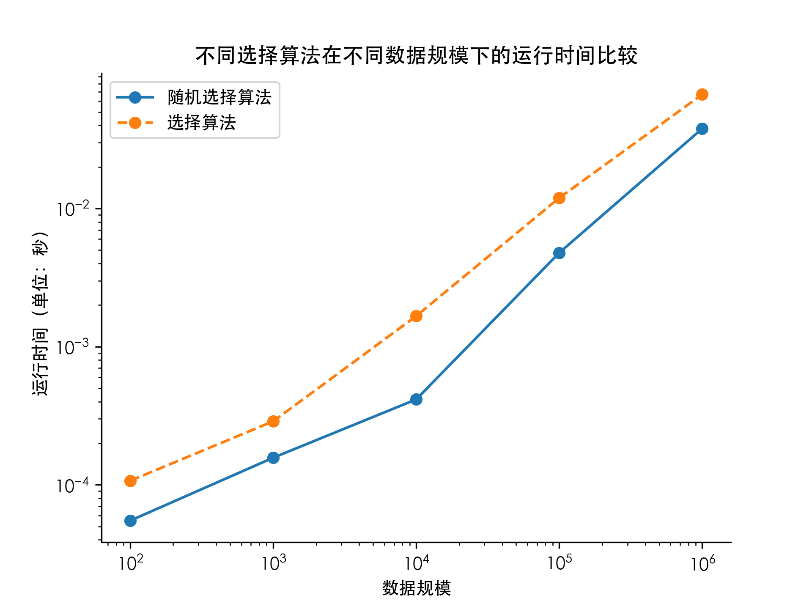
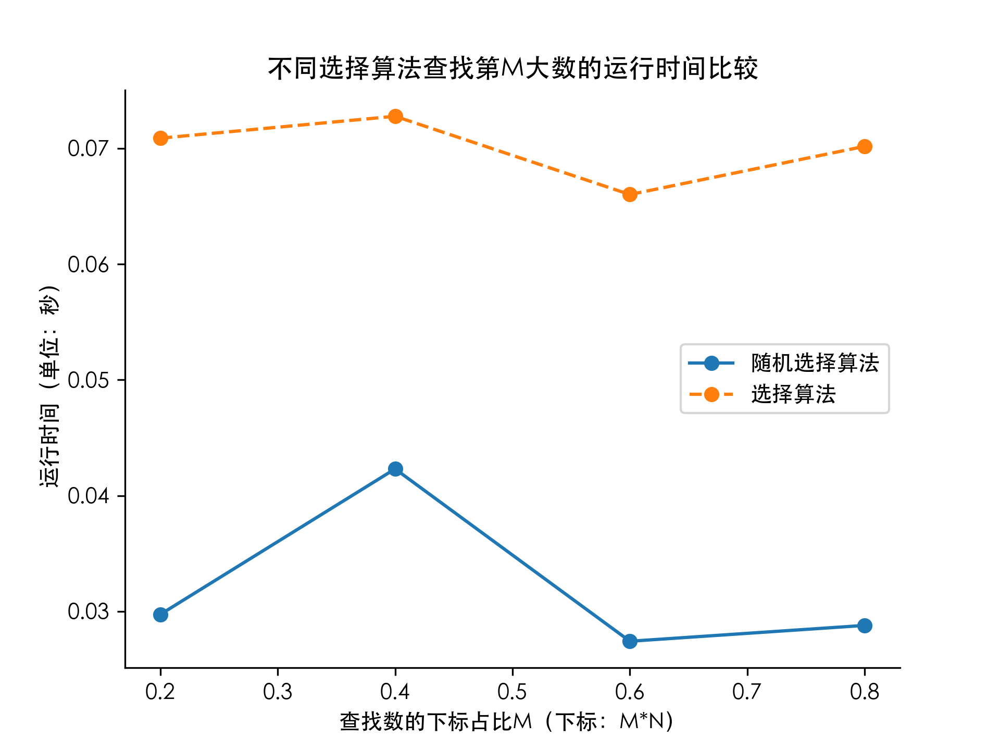

内容与设计思想
编写随机整数生成算法，生成S到T范围内的N个随机整数并输出；
编写红黑树构建算法，中序遍历各节点，输出颜色和值；
随机生成 、、、、 个不同的数，使用红黑树构建算法，并画图描述不同情况下的运行时间差异；
实现代码
1
2
3
4
5
6
7
8
9
10
11
12
13
14
15
16
17
18
19
20
21
22
23
24
25
26
27
28
29
30
31
32
33
34
35
36
37
38
39
40
41
42
43
44
45
46
47
48
49
50
51
52
53
54
55
56
57
58
59
60
61
62
63
64
65
66
67
68
69
70
71
72
73
74
75
76
77
78
79
80
81
82
83
84
85
86
87
88
89
90
91
92
93
94
95
96
97
98
99
100
101
102
103
104
105
106
107
108
109
110
111
112
113
114
115
116
117
118
119
120
121
122
123
124
125
126
127
128
129
130
131
132
133
134
| #include <iostream>
#include <fstream>
#include <cstdlib>
using namespace std;
struct node{
int data;
int color;
struct node *parent;
struct node *lchild;
struct node *rchild;
};
void lrotate(struct node *n){
struct node *nr = n->rchild;
n->rchild = nr->lchild;
if (nr->lchild) nr->lchild->parent = n;
nr->parent = n->parent;
if(n->parent) {
if (n == n->parent->lchild) n->parent->lchild = nr;
else n->parent->rchild = nr;
}
nr->lchild = n;
n->parent = nr;
}
void rrotate(struct node *n){
struct node *nl = n->lchild;
n->lchild = nl->rchild;
if (nl->rchild) nl->rchild->parent = n;
nl->parent = n->parent;
if(n->parent) {
if (n == n->parent->lchild) n->parent->lchild = nl;
else n->parent->rchild = nl;
}
nl->rchild = n;
n->parent = nl;
}
struct node *fixup(struct node *n){
struct node *t;
while(n->parent && n->parent->color == 1){
if(n->parent == n->parent->parent->lchild){
t = n->parent->parent->rchild;
if (t && t->color == 1){
n->parent->color = 0;
t->color = 0;
n->parent->parent->color = 1;
n = n->parent->parent;
if(!n->parent) n->color = 0;
}
else {
if (n == n->parent->rchild) {
n = n->parent;
lrotate(n);
}
n->parent->color = 0;
n->parent->parent->color = 1;
rrotate(n->parent->parent);
}
}
else{
t = n->parent->parent->lchild;
if (t && t->color == 1){
n->parent->color = 0;
t->color = 0;
n->parent->parent->color = 1;
n = n->parent->parent;
if(!n->parent) n->color = 0;
}
else {
if (n == n->parent->lchild) {
n = n->parent;
rrotate(n);
}
n->parent->color = 0;
n->parent->parent->color = 1;
lrotate(n->parent->parent);
}
}
}
t = n;
while (t->parent){
t = t->parent;
}
t->color = 0;
return t;
}
struct node *insert(struct node *root, struct node *n){
struct node *x, *y, *nroot;
x = root;
while(x){
y = x;
if(n->data < x->data){
x = x->lchild;
}
else{
x = x->rchild;
}
}
n->parent = y;
if(n->data < y->data){
y->lchild = n;
}
else{
y->rchild = n;
}
n->color = 1;
nroot = fixup(n);
return nroot;
}
void traverse(struct node *n){
if(!n) return;
traverse(n->lchild);
cout<<n->data<<" "<<n->color<<endl;
traverse(n->rchild);
}
int main(){
ifstream fin("data.txt");
clock_t start, stop;
int a[1000005], n = 0;
while (!fin.eof()){
fin>>a[n];
n++;
}
n--;
start = clock();
node *r = new node{a[0], 0, 0x0, 0x0};
for(int i = 1; i < n; i++){
node *n = new node{a[i], 1, 0x0, 0x0};
r = insert(r, n);
}
stop = clock();
traverse(r);
cout<<"Total Time: "<<(double)(stop - start) / CLOCKS_PER_SEC<<"s"<<endl;
fin.close();
return 0;
}
|
运行效率
时间记录使用了C++自带的clock()函数，通过在程序开头和结尾分别调用clock()函数并将两值相减，即可得到程序运行时间。结果如下：


总结
对于一颗有 个结点的红黑树，可以用 的时间向其中插入一个新结点，故构建一棵有 个结点红黑树的总运行时间为。从图表中可以看出，在对数坐标下，红黑树构建算法随数据规模的增大呈线性增长，与理论基本吻合。